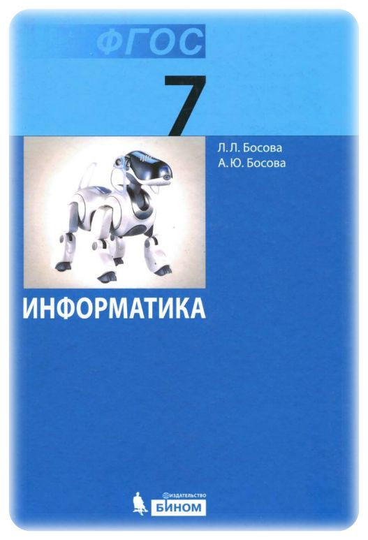

Учебник предназначен для изучения курса
«Информатика» в 5 классе общеобразовательной школы. Он входит в состав
учебно-методического комплекта по информатике для 5–9 классов, включающего
авторскую программу, учебники, рабочие тетради, электронные приложения и
методические пособия для учителя. В учебниках 5–6 классов представлено введение
в предмет, предполагающее дальнейшее изучение курса информатики в 7–9 классах.
Теоретический материал учебника поддержан развернутым аппаратом организации усвоения
изучаемого материала, включающим вопросы, задачи и задания для практического выполнения,
описание работ компьютерного практикума. Обеспечивается развитие у школьников универсальных
учебных действий, компетентности в области использования информационно-коммуникационных
технологий, формирование алгоритмической и информационной культуры.
на изучение 12 уроков
Информатика. Учебник для 6 класса — Босова Л.Л.
Методическое пособие содержит рекомендации по
проведению уроков информатики в 5–6 классах. Представлены подробные
поурочные разработки, включающие формируемые универсальные учебные действия,
решаемые учебные задачи. Даны рекомендации по использованию материалов электронного
приложения к учебникам и электронных образовательных ресурсов федеральных образовательных
порталов, а также ответы, указания и решения к задачам в учебниках и рабочих тетрадях.
Для учителей информатики и методистов.
на изучение 18 уроков
Информатика. Учебник для 7 класса — Босова Л.Л.
Учебник предназначен для изучения курса «Информатика»
в 7 классе общеобразовательной школы. Входит в состав УМК по информатике
для 5–9 классов, включающего авторскую программу, учебники, рабочие тетради,
электронные приложения и методические пособия. Может использоваться после вводного
курса информатики в 5–6 классах в рамках непрерывного изучения предмета или служить
точкой входа в отдельный курс информатики в 7–9 классах. Выдержан принцип инвариантности
к конкретным моделям компьютеров и версиям программного обеспечения. Теоретический
материал поддержан развёрнутым аппаратом организации усвоения изучаемого материала,
обеспечивающим подготовку школьников к сдаче экзамена за курс основной школы в формате
ГИА. Предполагается широкое использование ресурсов федеральных образовательных порталов,
в том числе Единой коллекции цифровых образовательных ресурсов
Соответствует федеральному государственному образовательному стандарту основного общего
образования (2010 г.).
на изучение 77 уроков
Информатика. Учебник для 8 класса — Босова Л.Л.
Учебник предназначен для изучения
курса «Информатика» в 8 классе общеобразовательной школы.
Он входит в состав учебно-методического комплекта по информатике
для 5-9 классов, включающего авторскую программу, учебники, рабочие
тетради, электронные приложения и методические пособия для учителя.
Выдержан принцип инвариантности к конкретным моделям компьютеров и версиям
программного обеспечения. Теоретический материал учебника поддержан развернутым
аппаратом организации усвоения изучаемого материала, обеспечивающим подготовку
школьников к сдаче экзамена за курс основной школы в формате ГИА. Предполагается
широкое использование ресурсов федеральных образовательных порталов, в том числе
Единой коллекции цифровых образовательных ресурсов. Соответствует федеральному
государственному образовательному стандарту основного общего образования (2010 г.).
на изучение 49 уроков
Информатика. Учебник для 9 класса — Босова Л.Л.
Учебник предназначен для изучения курса «Информатика»
в 9 классе общеобразовательной школы. Он входит в состав учебно-методического
комплекта по информатике для 5-9 классов, включающего авторскую программу,
учебники, рабочие тетради, электронные приложения и методические пособия для
учителя. Выдержан принцип инвариантности к конкретным моделям компьютеров и
версиям программного обеспечения. Теоретический материал учебника поддержан
развернутым аппаратом организации усвоения изучаемого материала, обеспечивающим
подготовку школьников к сдаче экзамена за курс основной школы в формате ГИА.
Изучение основ информационного моделирования, современных технологий обработки
больших массивов информации, коммуникационных технологий направлено на развитие
у школьников личностных, метапредметных и предметных образовательных результатов,
формирование их научного мировоззрения. Предполагается широкое использование
ресурсов федеральных образовательных порталов, в том числе Единой коллекции цифровых
 Учебник предназначен для изучения
курса «Информатика» в 8 классе общеобразовательной школы.
Он входит в состав учебно-методического комплекта по информатике
для 5-9 классов, включающего авторскую программу, учебники, рабочие
тетради, электронные приложения и методические пособия для учителя.
Выдержан принцип инвариантности к конкретным моделям компьютеров и версиям
программного обеспечения. Теоретический материал учебника поддержан развернутым
аппаратом организации усвоения изучаемого материала, обеспечивающим подготовку
школьников к сдаче экзамена за курс основной школы в формате ГИА. Предполагается
широкое использование ресурсов федеральных образовательных порталов, в том числе
Единой коллекции цифровых образовательных ресурсов. Соответствует федеральному
государственному образовательному стандарту основного общего образования (2010 г.).
Учебник предназначен для изучения
курса «Информатика» в 8 классе общеобразовательной школы.
Он входит в состав учебно-методического комплекта по информатике
для 5-9 классов, включающего авторскую программу, учебники, рабочие
тетради, электронные приложения и методические пособия для учителя.
Выдержан принцип инвариантности к конкретным моделям компьютеров и версиям
программного обеспечения. Теоретический материал учебника поддержан развернутым
аппаратом организации усвоения изучаемого материала, обеспечивающим подготовку
школьников к сдаче экзамена за курс основной школы в формате ГИА. Предполагается
широкое использование ресурсов федеральных образовательных порталов, в том числе
Единой коллекции цифровых образовательных ресурсов. Соответствует федеральному
государственному образовательному стандарту основного общего образования (2010 г.).